5.5. Advanced topics
5.5.5. How do you optimize a process?
5.5.5.2. Multiple response case
5.5.5.2.3. |
Multiple response: The mathematical programming approach |
In the mathematical programming approach the primary response is maximized or minimized, as desired, subject to appropriate constraints on all other responses. The case of two responses ("dual'' responses) has been studied in more detail by some authors and is presented first. Then, the case of more than 2 responses is illustrated.
Dual response systemsDual response systems More than 2 responses
The optimization of dual response systems (DRS) consists of finding operating conditions that
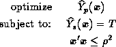
where T is the target value for the secondary response and  is the radius of a spherical constraint that limits the region in the controllable
factor space where the search should be undertaken. The value of
should be chosen with the purpose of avoiding solutions that extrapolate
too far outside of the region where the experimental data were obtained.
For example, if the experimental design is a central composite design,
choosing (axial distance)
is a logical choice. Bounds of the form
can be used instead if a cubical experimental region was used (e.g., when
using a factorial experiment). Note that a Ridge Analysis problem is nothing
but a DRS problem where the secondary constraint is absent. Thus, any algorithm
or solver for DRS's will also work for the Ridge Analysis of single response
systems.
is the radius of a spherical constraint that limits the region in the controllable
factor space where the search should be undertaken. The value of
should be chosen with the purpose of avoiding solutions that extrapolate
too far outside of the region where the experimental data were obtained.
For example, if the experimental design is a central composite design,
choosing (axial distance)
is a logical choice. Bounds of the form
can be used instead if a cubical experimental region was used (e.g., when
using a factorial experiment). Note that a Ridge Analysis problem is nothing
but a DRS problem where the secondary constraint is absent. Thus, any algorithm
or solver for DRS's will also work for the Ridge Analysis of single response
systems.
In a DRS, the response models and can be linear, quadratic or even cubic polynomials. A nonlinear programming algorithm has to be used for the optimization of a DRS. For the particular case of quadratic responses, an equality constraint for the secondary response, and a spherical region of experimentation, specialized optimization algorithms exist that guarantee global optimal solutions. In such case, the algorithm DRSALG can be used (download from http://www.stat.cmu.edu/jqt/29-3) but a Fortran compiler is necessary.
In the more general case of inequality constraints or a cubical region of experimentation, a general purpose nonlinear solver must be used and several starting points should be tried to avoid local optima. This is illustrated in the next section.
More than 2 responses
Example:3 components
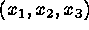
of a propellant need to be selected to maximize a primary response, burning rate subject to satisfactory levels of two secondary reponses, namely, the variance of the burning rate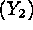
and the cost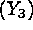
. The three components must add up to 100% of the mixture. The fitted models were: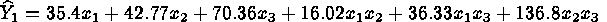
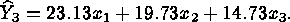
The optimization problem is therefore:
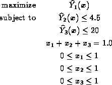
We can use Microsoft Excel's "solver'' to solve this problem. The table below shows an Excel spreadsheet that has been setup with the problem above. Cells B1:B3 contain the decision variables (cells to be changed), cell E1 is to be maximized, and all the constraints need to be entered appropriately. The figure shows the spreadsheet after the solver completes the optimization. The solution is
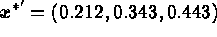
which provides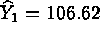
,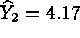
, and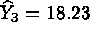
. Therefore, both secondary responses meet the desired bounds. The solver should be run from a variety of starting points (i.e., try different initial values in cells B1:B3 prior to start the solver) to avoid local optima. Once again, confirmatory experiments should be conducted at the estimated optimal operating conditions.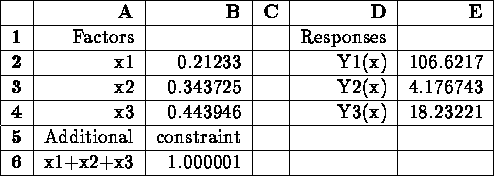